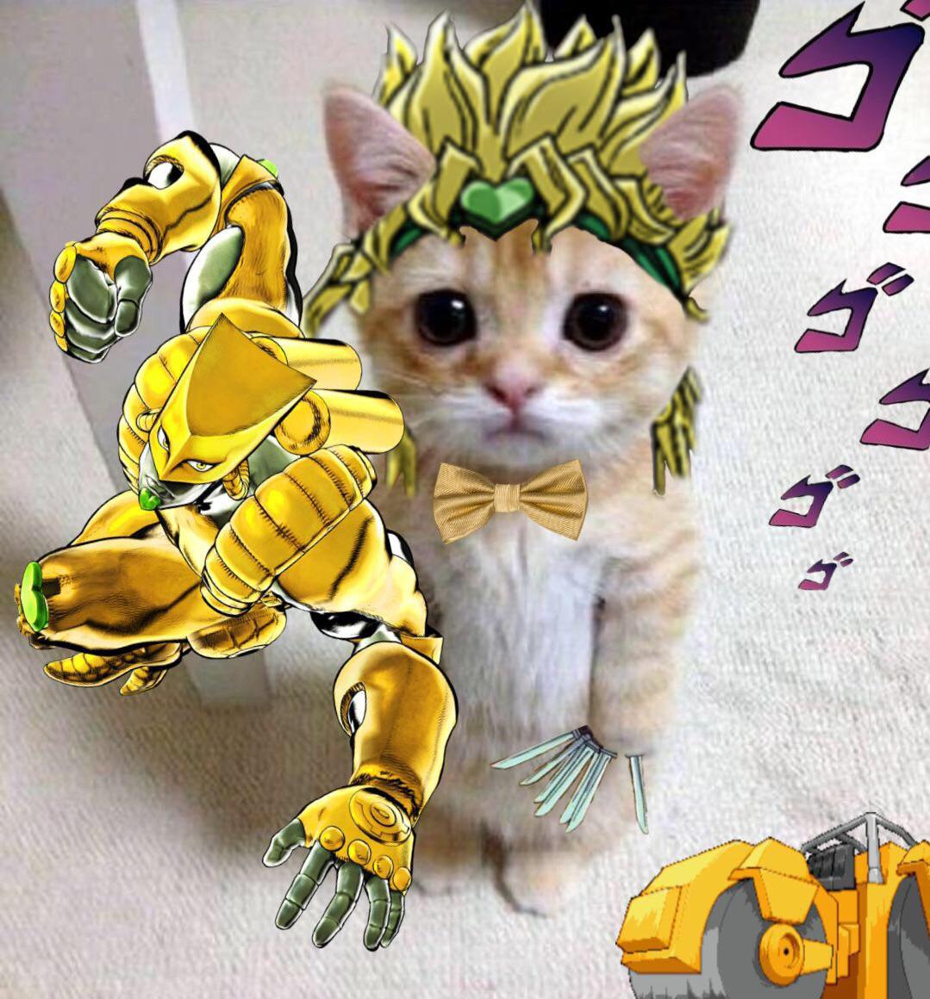

testes de efeitos visuais - CSS
esse foi meu pequeno estudo sobre alguns efeitos básicos do CSS; apenas um complemento à atividade que já foi feita e enviada juntamente a atividade de HTML (link abaixo)
atividadelevitar?
passe o mouse sobre o gatinho e veja a mágica acontecer
títulos coloridos
alguns testes de cores, tamanhos e formas
grandinho
<h4> efeito degradê
mediano
<h5> efeito de digitação com animação
pequeno
<h6> efeito com sombras
ache o segredo
descubra... (com o mouse)
